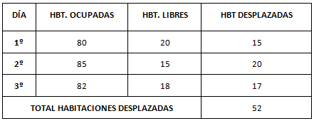
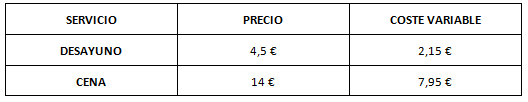
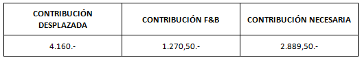

Un aspecto muy importante de la confección de tarifas de grupos, tal y como se vio anteriormente, es el grado de interés que en cada momento pueda resultar más o menos importante para la gestión de los ingresos, para lo cual se suele emplear, quizás no de un modo correcto, el término Revenue Management.
Bajo el “paraguas” que supone este término se encuadran una serie de políticas de precios que tienen como principal función maximizar los ingresos.
Para el caso de los grupos, este interés se centra en descubrir, y siempre a partir de las previsiones, si la atención de grupos resulta o no importante en cada momento y, si es así, a qué precio resulta recomendable.
Normalmente, el establecimiento hotelero realizará sus previsiones de ocupación e ingresos, a ser posible, a partir de la experiencia. Conocidos esos datos, y siempre ante la solicitud de contratación de un contingente, el establecimiento determinará si resulta o no interesante la contratación, o el precio mínimo que debe aplicarse para que ese contingente contribuya a mantener o aumentar los ingresos.
En este caso, se operan los siguientes datos, mostrados a partir de un ejemplo concreto:
Un establecimiento de 100 habitaciones recibe la solicitud de contratación de un grupo de 70 personas en régimen de media pensión, para ser alojadas en 35 habitaciones dobles, durante un total de 3 jornadas.
Las previsiones de ocupación para los días que solicita el grupo son las siguientes:
DÍA 1º: 80 HABITACIONES
DÍA 2º: 85 HABITACIONES
DÍA 3º: 82 HABITACIONES
El establecimiento debe calcular las habitaciones que ha de desplazar ya que, el primer día dispone de 20 habitaciones libres y, por tanto, ha de restar de sus previsiones un total de 15 unidades para satisfacer las necesidades del grupo:

Además, el establecimiento dispone de los siguientes datos y previsiones:
El ADR (Averagedailyrate) o precio medio diario por habitación es de 80 €. Al mismo tiempo, los precios de venta y costes de desayuno y cena, posiblemente no tenidos en cuenta en las previsiones de ocupación son:

Por tanto, con estos datos, se entiende que la contribución que las habitaciones desplazadas realizan a los ingresos es la siguiente:
52 habitaciones x 80 € = 4.160 €
Mientras, se obtienen unos beneficios procedentes de Food & Beverage, con los que no se contaba, y que formarán parte de la contribución que el grupo hace a los ingresos del hotel:
Desayuno = 4,5 – 2,15 = 2,35 €
Cena = 14 – 7,95 = 6,05 €
En beneficio es, en consecuencia de 8,40 € por persona y día. Este hecho supone una contribución a los ingresos del grupo de:
6,05 x 70 x 3 = 1.270,50.- €

En consecuencia, se debe determinar un precio mínimo del grupo, a lo que debe sumarse posteriormente el precio de venta de cada servicio de desayuno y cena. El cálculo del alojamiento sería:
2.889,50 / 3 días / 70 personas = 13,76 € por pax y día.
Por tanto, el precio mínimo del grupo a cotizar sería:
13,76 + 4,50 + 14,00 = 32,26 € + IVA por persona y día.
A partir de este precio, el establecimiento sabe que iguala las previsiones de ingresos y, por tanto, la venta del grupo por encima de este precio supondrá un incremento de los ingresos.
Sin embargo, este proceso plantea un problema. Realmente, no se ha considera la oportunidad de incluir el dato procedente del índice TrevPar. Este índice se indica:
TrevPar = Total ingresos residentes / Habitaciones disponibles
Si el hotel que se expone dispusiese de esta información, y se estableciera que este índice TrevPar es de 60 €, indicaría que cada habitación disponible en el hotel obtiene esos ingresos medios, aunque no esté ocupada, lo que justifica su valor, inferior al ADR. Además, habla exclusivamente de ingresos, sin analizar los márgenes de beneficio, por lo que este hecho, para calcular el precio mínimo, no tendría en cuenta los márgenes de Food & Beverage, para calcular su contribución, sino que se realizaría únicamente con sus precios de venta. A este respecto es comprensible porque el índice TrevPar no distingue la procedencia de los diferentes ingresos de los clientes. En este caso:
35 habitaciones x 3 días x 60 € = 6.300 € serían los ingresos mínimos que deberían obtenerse por este grupos.
La contribución de Food & Beverage será:
(14,00 + 4,50) x 3 días x 70 pax = 3.885 €
Por tanto, las habitaciones deben aportar un total de 2.415 €
2.415 / 3 / 70 = 11,5 €
Por tanto, el precio de venta será:
11,50 + 14,00 + 4,50 = 30 € + IVA, por persona y día.
Pero este sistema, incrementa unos costes de F&B, que pueden no estar previstas.